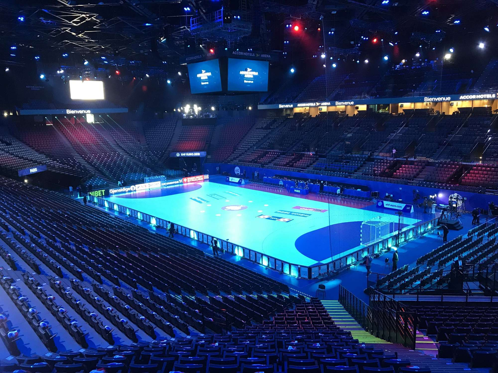
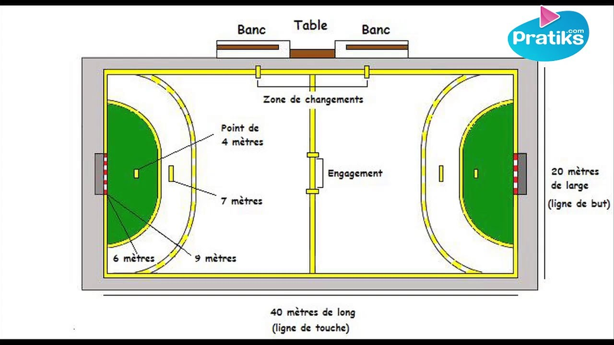
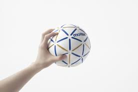
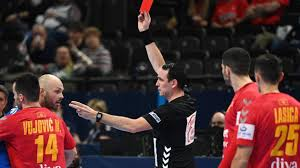
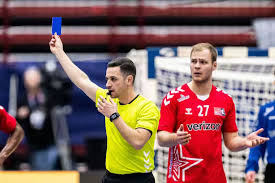
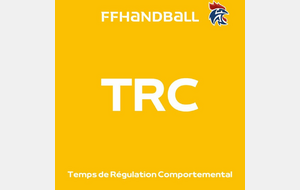

1. Composition d'une Équipe
Une équipe de handball se compose de 7 joueurs sur le terrain :
- 6 joueurs de champ, chargés d'attaquer et de défendre.
- 1 gardien de but, dont le rôle est de protéger les filets.

Le Gardien de But
- Arrêt des tirs : Prévenir les buts en arrêtant les tirs adverses.
- Lecture du jeu : Anticiper les actions de l'attaquant.
- Relance rapide : Démarrer des contre-attaques en relançant rapidement le ballon.
- Communication : Organiser la défense et diriger ses coéquipiers.
Les Ailiers
- Vitesse et agilité : Exploiter les espaces et marquer en contre-attaque.
- Marquer des buts en mouvement : Tirer en extension ou en suspension.
- Soutien à l’attaque : Participer à la circulation du ballon.
Les Arrières
- Tirs à distance : Réaliser des tirs puissants pour attaquer à longue distance.
- Création d’espaces : Attirer les défenseurs pour libérer de l’espace pour les autres joueurs.
- Travail défensif : Défendre sur l’attaque adverse.
Le Pivot
- Présence physique : Jouer un rôle de point d’ancrage dans l’attaque.
- Recevoir des passes : Marquer près du but après avoir reçu une passe.
- Blocage : Soutenir la défense lorsque nécessaire.
Les Demi-centres
- Création de jeu : Organiser les attaques et distribuer les passes décisives.
- Dribbles et tirs : Utiliser leur agilité pour passer et tirer.
Les oubliés
Le Coach Principal
Le coach principal, ou entraîneur, est le chef d'orchestre de l’équipe. Il est responsable de la mise en place de la stratégie générale, de la gestion des joueurs et de la direction de l’équipe pendant les matchs et les entraînements. Voici plus de détails sur son rôle :
- Préparation tactique et technique : Le coach prépare des exercices pour améliorer les aspects techniques et tactiques du jeu.
- Gestion des matchs : Il ajuste les stratégies, décide des remplacements et donne des instructions en fonction des événements du match.
- Motivation et gestion des émotions : Le coach motive les joueurs et gère leur mental pendant les matchs.
- Leadership et vision : Il incarne une vision à long terme et construit une identité de jeu pour l’équipe.
Les Adjoints ou Assistants du Coach
Les assistants du coach soutiennent le coach principal dans la mise en œuvre des tactiques et des entraînements. Voici leurs rôles :
- Spécialisation par secteur : Un adjoint peut se concentrer sur un domaine particulier, comme l’attaque, la défense, ou encore les gardiens de but.
- Gestion des joueurs : L’un des rôles des assistants est de maintenir une relation de proximité avec les joueurs pour suivre leur progression.
- Analyses techniques : Ils analysent les matchs passés et fournissent des retours constructifs pour améliorer l’équipe.
Le Préparateur Physique
Le préparateur physique gère la condition physique des joueurs pour les maintenir au plus haut niveau. Il a plusieurs responsabilités :
- Évaluation de la condition physique : Avant la saison, il évalue les capacités physiques des joueurs pour personnaliser les entraînements.
- Suivi de la préparation physique : Il planifie des séances d’entraînement pour améliorer l’endurance, la vitesse, la force et la récupération.
- Prévention des blessures et récupération : Il veille à prévenir les blessures et supervise la récupération des joueurs après les matchs et les entraînements.
Le Médecin et le Kinésithérapeute
Le médecin et le kinésithérapeute sont essentiels pour garantir la santé des joueurs :
- Le médecin : Responsable des soins médicaux, du diagnostic des blessures et de la gestion de la santé des joueurs.
- Le kinésithérapeute : S’occupe de la rééducation des joueurs blessés et veille à leur mobilité et leur souplesse pour prévenir les blessures.
Le Statisticien ou Analyste Vidéo
L’analyste vidéo ou statisticien collecte et analyse les données pour optimiser les performances :
- Collecte et analyse des données : Il analyse les statistiques des matchs pour ajuster les stratégies de jeu.
- Analyse vidéo : Il capture les moments clés des matchs et aide à étudier les erreurs tactiques et les schémas de jeu de l’adversaire.
Le Responsable Logistique
Le responsable logistique est chargé de l’organisation matérielle et des déplacements :
- Organisation des déplacements : Il organise le transport, l’hébergement et les repas lors des matchs à l’extérieur.
- Gestion du matériel : Il veille à ce que l’équipe dispose de tout le matériel nécessaire et que tout soit en bon état.
Les Supporters et Bénévoles
Les supporters et bénévoles jouent un rôle important dans la dynamique de l’équipe :
- Support moral : Les supporters encouragent l’équipe et créent une ambiance positive, ce qui motive les joueurs.
- Soutien logistique : Les bénévoles participent à l’organisation des événements, comme la gestion de la billetterie et l’accueil des spectateurs.
Le Psychologue Sportif
Le psychologue sportif aide les joueurs à gérer la pression et à améliorer leur mental :
- Préparation mentale : Il travaille sur la concentration, la gestion du stress et la confiance en soi des joueurs.
- Cohésion d’équipe et gestion des conflits : Il renforce la cohésion du groupe et peut intervenir pour résoudre des conflits au sein de l’équipe.
Le Terrain avec et sans Résine
2. Le Terrain et le Matériel
Le handball se joue sur un terrain de forme rectangulaire, avec des dimensions standardisées : 40 mètres de long et 20 mètres de large. Ce terrain est divisé en plusieurs zones, chacune ayant un rôle précis dans le déroulement du jeu. 
- La zone de but : une demi-lune d'un rayon de 6 mètres, située devant chaque but. Cette zone est un espace réservé au gardien de but et interdite aux joueurs attaquants, sauf si ceux-ci sont en train de tenter un tir. Le gardien est également le seul joueur autorisé à pénétrer dans cette zone, sauf si un tir est en cours.
- Les buts : les cages de handball mesurent 3 mètres de large et 2 mètres de haut, et sont placées au centre de chaque ligne de fond du terrain. Elles sont protégées par un gardien dont le rôle est d’empêcher les tirs de l’équipe adverse d'entrer dans la cage.
- La ligne des 9 mètres : un autre marquage important qui délimite la zone à partir de laquelle les joueurs doivent effectuer un tir au but ou une passe après avoir franchi une certaine distance.
- La ligne médiane : elle sépare le terrain en deux moitiés égales, chaque équipe occupant une moitié pendant chaque mi-temps.
Le terrain de handball peut être aménagé de différentes manières en fonction du type de surface utilisé. Les terrains de handball sont souvent divisés en deux catégories principales : ceux qui sont recouverts de résine (souvent appelés terrains "avec résine") et ceux qui ne le sont pas (terrains "sans résine"). Ces deux types de surfaces influencent les conditions de jeu, la sécurité des joueurs, ainsi que le style de jeu. Voici un aperçu des caractéristiques et des différences entre ces deux types de terrains.
1. Terrain avec Résine
Un terrain de handball avec résine est une surface spécialement conçue et préparée pour offrir une adhérence optimale et un meilleur confort de jeu. La résine est un revêtement synthétique appliqué sur la surface du terrain, généralement en acrylique ou en polyuréthane, qui permet de créer une texture lisse et uniforme. Voici les avantages et caractéristiques principales des terrains avec résine :
- Adhérence accrue : La résine procure une excellente adhérence, ce qui est essentiel pour les joueurs de handball qui doivent souvent faire des changements rapides de direction et exécuter des pivots. Cela permet également de réduire les risques de glissades accidentelles.
- Surface uniforme : Contrairement à d'autres types de surfaces comme les terrains en béton ou en terre battue, un terrain en résine offre une surface uniforme, ce qui est important pour garantir une bonne qualité de jeu, sans irrégularités qui pourraient affecter les passes ou les tirs.
- Confort : Les terrains avec résine sont souvent conçus pour offrir une certaine souplesse. Cela réduit l'impact sur les articulations des joueurs, en particulier lors de chocs fréquents et de sauts.
- Durabilité : Ce type de terrain est extrêmement durable et résistant aux conditions climatiques. Il peut supporter une utilisation intensive sans se détériorer rapidement, ce qui en fait une solution idéale pour les compétitions de haut niveau.
- Entretien facile : La résine est relativement facile à entretenir. Elle est résistante à l'humidité et peut être nettoyée aisément, ce qui est important pour maintenir un terrain de jeu optimal.
Cependant, les terrains avec résine peuvent parfois devenir glissants par temps de pluie ou en cas de mauvaise maintenance, bien qu’ils restent globalement plus sûrs que d'autres surfaces comme l'asphalte ou le béton.
2. Terrain sans Résine
Un terrain de handball sans résine fait référence à des surfaces naturelles ou non traitées, comme les terrains en béton, en gazon synthétique ou en terre battue. Ces terrains sont moins courants pour les compétitions professionnelles, mais ils peuvent encore être utilisés dans certaines situations, comme lors de matchs en extérieur ou pour l'entraînement. Voici les principales caractéristiques de ces terrains :
- Moins d'adhérence : Contrairement aux terrains recouverts de résine, les terrains non traités peuvent offrir moins d'adhérence, ce qui augmente le risque de glissades, surtout en cas d'humidité ou de pluie. Cela peut affecter la rapidité du jeu et la sécurité des joueurs.
- Surface irrégulière : Les terrains sans résine, comme ceux en béton ou en terre battue, peuvent présenter des irrégularités qui rendent le jeu plus difficile et moins fluide. Les rebonds du ballon peuvent être imprévisibles, ce qui rend les passes et les tirs moins précis.
- Confort moindre : Les terrains en béton ou en asphalte, par exemple, sont plus durs, ce qui augmente les risques de blessures, notamment aux articulations, aux genoux et aux chevilles. Ce type de surface peut également être plus fatiguant pour les joueurs en raison de son manque de souplesse.
- Entretien plus complexe : L'entretien des terrains sans résine peut être plus coûteux et plus contraignant, car il nécessite de garder la surface en bon état, de reboucher les fissures et de veiller à ce qu'elle soit propre. En outre, certains terrains peuvent souffrir de l'erosion ou du mauvais temps, ce qui entraîne une dégradation plus rapide de la surface.
- Coût inférieur : Un terrain sans résine peut coûter moins cher à la construction initiale, ce qui peut être un facteur déterminant pour les installations moins sophistiquées ou pour les entraînements dans des espaces moins professionnels.
Bien que ces terrains soient moins adaptés pour les compétitions de haut niveau, ils peuvent être utiles pour l’entraînement ou pour des matchs informels. Cependant, le confort et la sécurité des joueurs peuvent être compromis par les caractéristiques de ces surfaces.
Comparaison entre les deux types de terrains
En résumé, la principale différence entre les terrains avec et sans résine réside dans la qualité et la sécurité de la surface de jeu. Les terrains avec résine offrent une meilleure adhérence, un confort accru et un entretien simplifié, ce qui les rend idéaux pour les compétitions professionnelles. En revanche, les terrains sans résine, bien que moins coûteux et parfois plus accessibles, présentent des inconvénients en termes de sécurité et de qualité de jeu.
Comparatif des Ballons de Handball
| Catégorie | Diamètre | Poids | Avec Résine | Sans Résine |
|---|---|---|---|---|
| Hommes Adultes | 58-60 cm | 425-475 g |
Meilleure adhérence pour les tirs puissants et précis. Utilisé en compétition. Exemple : |
Texture antidérapante adaptée pour entraînements et matchs sans résine. Exemple :  |
| Femmes Adultes | 54-56 cm | 325-375 g |
Optimise la prise en main grâce à une surface collante. Exemple : |
Surface légèrement rugueuse pour une bonne prise naturelle. Exemple : |
| Jeunes Joueurs | Taille adaptée selon âge (souvent ≤ 54 cm) | Plus léger pour favoriser la manipulation |
Rarement utilisé en raison des exigences techniques plus faibles. Exemple : |
Prise en main adaptée grâce à une texture souple et antidérapante. Exemple : |
3. Durée du Match
La durée du match varie en fonction de la catégorie des joueurs. Voici un tableau indiquant les durées des matchs pour différentes catégories :
| Catégorie | Durée |
|---|---|
| Adultes (16 ans et plus) | 2 x 30 minutes |
| Jeunes -17 ans | 2 x 30 minutes |
| Jeunes -15 ans | 2 x 25 minutes |
| Jeunes -13 ans | 3 x 15 minutes |
| Jeunes -11 ans | 3 x 12 minutes |
Chaque mi-temps est séparée par une pause de 10 minutes. En cas d'égalité lors de matchs éliminatoires, des prolongations de 2 x 5 minutes peuvent être jouées, suivies d'une séance de tirs au but si nécessaire.
4. Règles de Base
Voici les règles fondamentales qui structurent le jeu :
- Un joueur peut faire jusqu'à 3 pas avec le ballon sans dribbler.
- Le dribble est illimité, mais une fois interrompu, le joueur doit passer ou tirer.
- Il est interdit de pénétrer dans la zone de 6 mètres, sauf pour le gardien de but.
- Les contacts physiques sont autorisés dans certaines limites, mais les actions dangereuses ou violentes sont sanctionnées.
- Pour se faire comprendre sur le terrain l'arbitre utilise des geste pour se faire
comprendre

5. Fautes et Sanctions
Les fautes sont jugées par les arbitres et peuvent entraîner :
-
Carton jaune : avertissement.
-
Exclusion temporaire : 2 minutes hors du terrain.
- Carton rouge : expulsion définitive du match. 
- Carton rouge + Carton bleu : expulsion définitive du match + passage en commission disciplinaire pour mettre une sanction pendant un certain temps en fonction de la gravité de la faute. 
-
Carton blanc : protocole commotion cérébrale lors d'un choc violent à la tête.
Plus d'informations
- Carton TRC : le match rencontre des difficultés pour assurer la sécurité des officiels d'arbitrage.  Plus d'informations : CTA 2023-2024
6. L'Engagement et les Relances
Le match commence par un engagement au centre du terrain. Les engagements après un but ou une sortie de ballon suivent des règles spécifiques :
- Après un but, le jeu reprend par un engagement de l'équipe ayant encaissé le but.
- Les relances depuis la ligne de touche ou la ligne de fond doivent se faire dans un délai de 3 secondes.